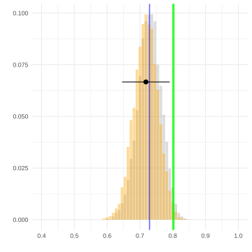

Suppose we’ve drawn a sample \(Y_1 \ldots Y_n\) with replacement from a population \(y_1 \ldots y_m\) with mean \(\theta=\frac{1}{m}\sum_{j=1}^m y_j\). The plot above shows the sampling distributions of these three estimators of \(\theta\). \[
\begin{aligned}
\hat \theta_1 &= 0 \\
\hat \theta_2 &= \frac{1}{n}\sum_{i=1}^n Y_i \\
\hat \theta_3 &= \frac{1}{n+10}\sum_{i=1}^n Y_i
\end{aligned}
\]
Part A
Match each estimator to the plot of its sampling distribution, e.g. \(\hat\theta_1: a\), \(\hat\theta_2: b\), etc. Of the estimators \(\hat\theta_1\), \(\hat\theta_2\), and \(\hat\theta_3\), which do you know to be consistent? Which could possibly be consistent?
Correction
The x-axis ticks were mislabeled in the version of this document posted earlier. They were off by 1, so ‘estimator a’ was centered at 0, etc. This has been fixed. I apologize for any confusion this caused.
🔒
Solution
Locked (Week 0)
Part B
In the plot below, I’ve shown a bootstrap estimate of the sampling distribution of an estimator \(\hat\theta\). Suppose it’s a good estimate, so you can get away with thinking of it as the estimator’s actual sampling distribution. On top of it, I’ve drawn four interval estimators.
Which are calibrated to have at least 95% coverage? Put a check next to those.
Which are calibrated to have almost exactly 95% coverage? Circle your check for those.
A Clarification.
If I ask a problem like this on an exam, I’ll make it clear that ‘at least but not exactly 95% coverage’ means substantially more than 95% coverage. Maybe I’ll give you a list of choices for each interval, e.g. 1%, 5%, 50%, 95%, 99% that are spread out enough that familiarity with the illustrations we use often in class will make it clear which is which.
🔒
Solution
Locked (Week 0)
Problem 2
The miracle of random sampling is that we’re able to estimate the mean of a population with a very small sample from that population. But for that to work, our observations have to be independent—or close to it. If we observe the incomes \(Y_1 \ldots Y_n\) of \(n\) people drawn with replacement from a population with mean income \(\mu\) and income standard deviation \(\sigma\), the variance of the sample mean \(Y_1 \ldots Y_n\) will be \(\sigma^2/n\). Below, I’ve shown the calculation.
Now suppose that you’ve been lazy, and instead of calling \(n\) different people, you’ve just called one and reported their income \(n\) times. That is, you’ve got ‘a sample of size n’, \(\tilde Y_1 \ldots \tilde Y_n\), with \(\tilde Y_1=Y_1, \tilde Y_2 = Y_1, \tilde Y_3 = Y_1, \ldots\). What is the variance of the mean of this ‘sample’, \(\frac1n\sum_{i=1}^n \tilde Y_i\)? And if it’s not \(\sigma^2/n\) like we got for the mean of \(Y_1 \ldots Y_n\), explain—with reference to the calculation above—why it is not. If there’s a line or lines where something different happens, say which; say what happens instead; and explain why.
🔒
Solution
Locked (Week 0)
Problem 3: Interval Calibration
Suppose we’re estimating the proportion \(\theta\) of voters in a population who support a policy, using a sample of size \(n=100\) drawn with replacement. Below are three sampling distributions corresponding to three different values of \(\theta\): 0.5, 0.6, and 0.7. On each, I’ve drawn a 95% confidence interval centered at 0.6.
θ = 0.5
θ = 0.6
θ = 0.7
The green vertical line marks the true value of \(\theta\) in each case.
Part A
For which of these three values of \(\theta\) does the interval contain the true value? Looking at the sampling distributions, roughly what fraction of intervals constructed this way (centered at \(\hat\theta\) with the same width) would contain \(\theta\) in each case?
🔒
Solution
Locked (Week 0)
Part B
If you wanted to have 95% coverage no matter which of these three \(\theta\) values was true, would you need to make your interval wider, narrower, or keep it the same? Explain briefly.
🔒
Solution
Locked (Week 0)
Part C
Suppose you wanted to achieve 99% coverage instead of 95%. By what factor would you need to multiply the interval width?
Hint: For a normal distribution, 95% of the probability is within \(\pm 1.96\) standard deviations of the mean, and 99% is within \(\pm 2.58\) standard deviations.
🔒
Solution
Locked (Week 0)
Problem 4
In the block of R code below, I’ve implemented the estimators \(\hat\theta_2\) and \(\hat\theta_3\) from Problem 1.
Below, I’ve plotted the sampling distributions of \(\hat\theta_2\) (left) and \(\hat\theta_3\) (right) in gray with their means indicated by blue vertical lines, a histogram of the result of calling do.thing(theta.hat.2) (left) and do.thing(theta.hat.3) (right) in orange, a green vertical line indicating the value of \(\theta\), and interval estimates of the form \(\hat\theta_2 \pm 1.96\hat\sigma_2\) (left) and \(\hat\theta_3 \pm 1.96\hat\sigma_3\) (right) where \(\hat\sigma_2\) and \(\hat\sigma_3\) are the results of calling sd(do.thing(theta.hat.2)) and sd(do.thing(theta.hat.3)) respectively.
Part A
If we take this approach to calibrating an interval estimator centered on \(\hat\theta_2\), what is the coverage probability of these intervals: roughly 95%, roughly 50%, or roughly 5%? What about the interval estimators centered on \(\hat\theta_3\)?
🔒
Solution
Locked (Week 0)

Part B
Below, I’ve added another interval estimate to each plot. A blue one. These are \(\hat\theta_2 \pm 1.96 \hat\sigma_2\) and \(\hat\theta_3 \pm 1.96 \hat\sigma_3\) where, letting \(\hat\theta_2^{(1)} \ldots \hat\theta_2^{(10,000)}\) be the elements of do.thing(theta.hat.2) and \(\hat\theta_3^{(1)} \ldots \hat\theta_3^{(10,000)}\) be the elements of do.thing(theta.hat.3), \[
\begin{aligned}
\hat\sigma_2^2 &= \frac{1}{10,000}\sum_{r=1}^{10,000} (\hat\theta_2^{(r)} - \bar Y)^2 \\
\hat\sigma_3^2 &= \frac{1}{10,000}\sum_{r=1}^{10,000} (\hat\theta_3^{(r)} - \bar Y)^2.
\end{aligned}
\]
Explain why the blue interval on the left looks about the same as the black one but the one on the right is wider. Why might you want to use these blue intervals instead of the black ones?
Extra Credit Problems.
This one was meant to be a little unfamiliar—something you couldn’t do on autopilot even if you had perfect recall of the lectures and homeworks. I will put something a bit like this on the exam, but it’ll be an extra credit problem and clearly identified as an extra credit problem. If want to prepare for it, you might want to think a little bit more about \(\hat\sigma_2\) and its relationship to the usual estimate of the standard deviation of the sample mean \(\bar Y\), \(\hat\sigma = \sqrt{\frac{1}{n}\sum_{i=1}^n (Y_i - \bar Y)^2 / n}\).